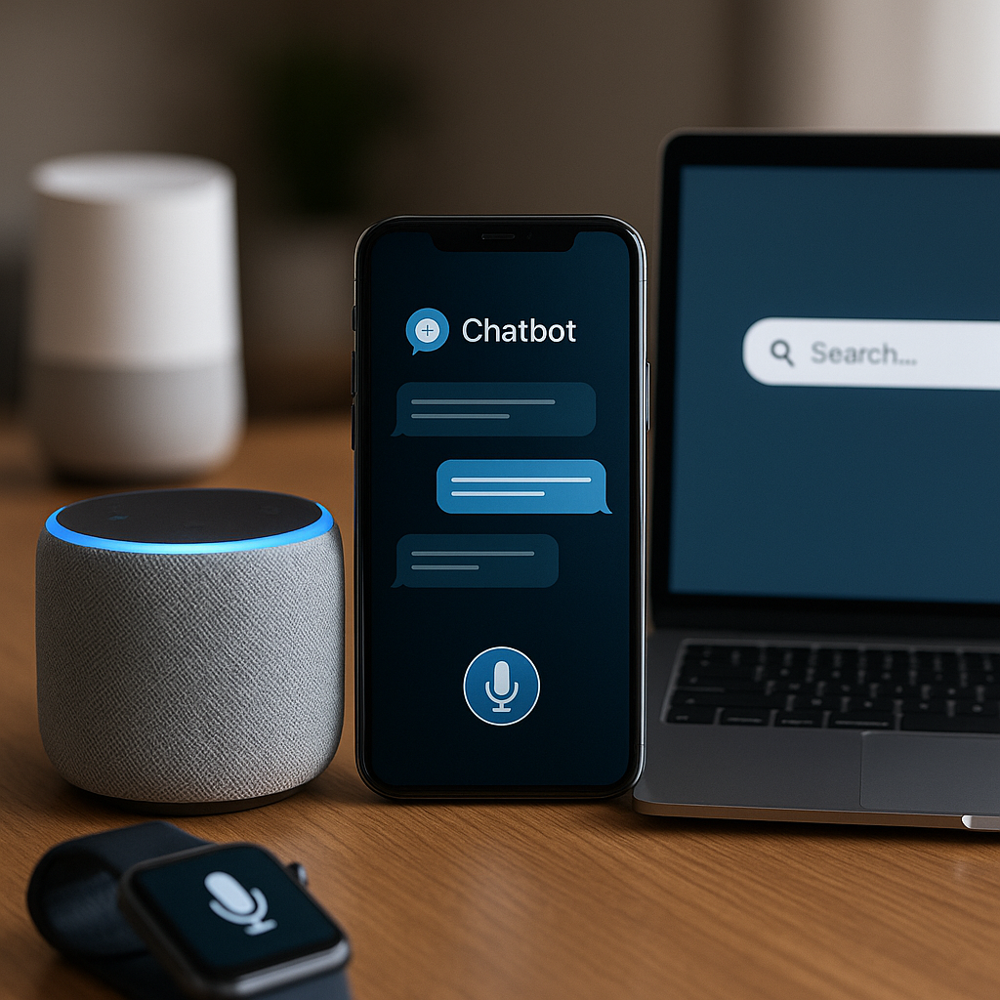
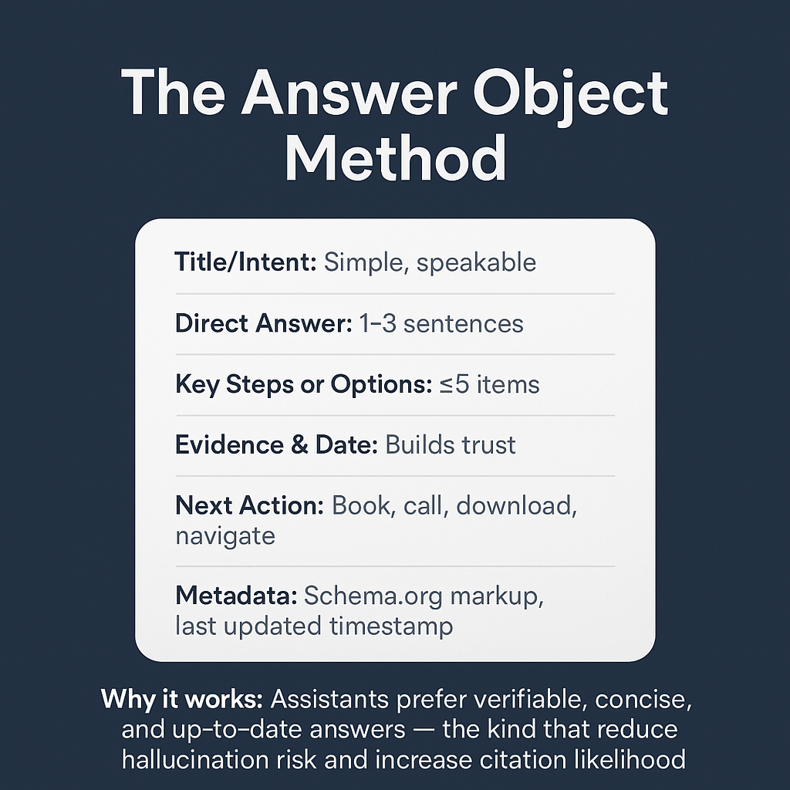
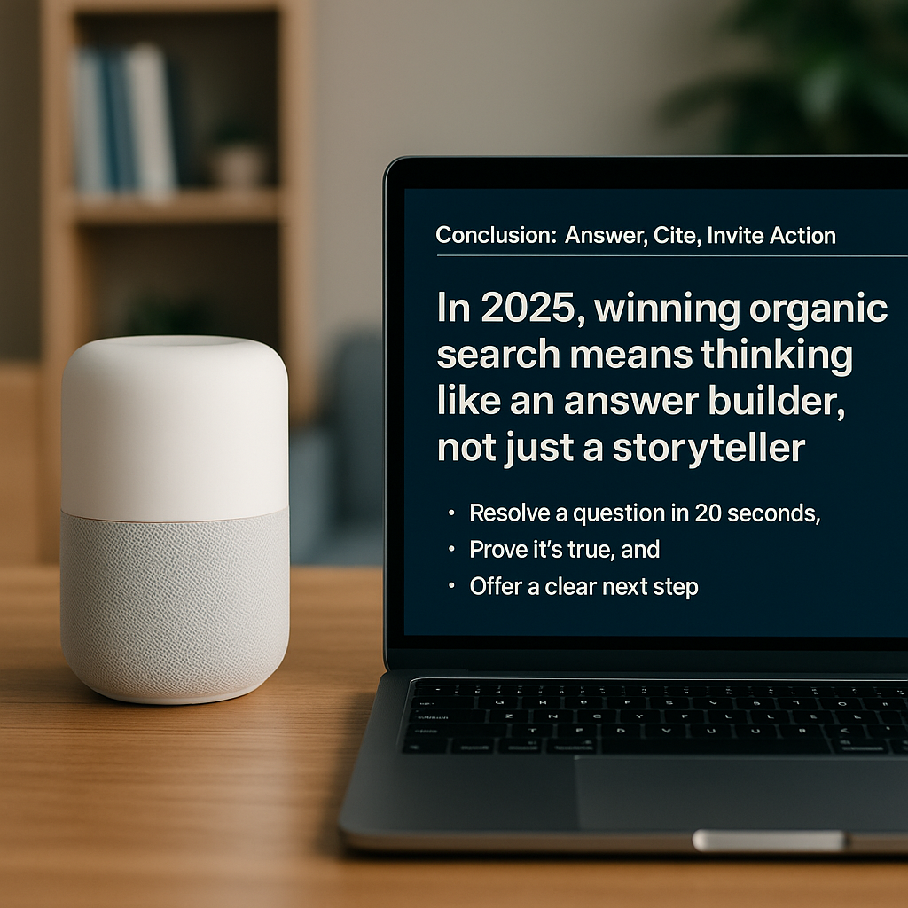

By 2025, organic search isn’t just something we type.
BIt’s something we speak.
NWhether it’s a smart speaker on a kitchen counter, an LLM-powered chatbot in a banking app, or an AI assistant embedded in an enterprise dashboard, people now expect answers in seconds—and in their own words.
This isn’t “voice SEO 1.0” anymore.
It’s about creating content that becomes the first answer an assistant delivers, structured so machines can parse it, humans can understand it, and both can act on it immediately.
🌐 The 2025 Voice & Chat Landscape

Where your words now live
- Smart speakers (Alexa, Google Nest, HomePod)
- In-app AI assistants (banking, travel, B2B SaaS)
- Car dashboards with conversational navigation
- Wearables and voice-first UIs for accessibility
- Customer service chatbots with natural language processing
What’s changed
- Keyword matching has given way to intent recognition.
- Ranking is about trust, recency, and clarity.
- Assistants no longer give 10 blue links — they give one confident answer.
🧩 Understanding Conversational Intent
Old SEO was about keywords; new SEO is about utterances.
In conversational AI, an utterance is a natural speech pattern, often messier and more context-rich than typed queries.
Four core intent types:
- Discover — “What is the difference between espresso and ristretto?”
- Decide — “Which is better for home: a burr grinder or blade grinder?”
- Do — “Book a table for two at 7 PM at Café Aroma.”
- Fix — “Why does my Wi-Fi keep disconnecting?”
Action tip:
Build an Utterance Library—a database of 50–200 real-world questions in spoken form for your niche.
Map each to a canonical, ready-to-speak answer.
🧱 The Answer Object Method

Think of content not as blog posts, but as Answer Objects — modular, machine-readable chunks that can resolve one intent in under 20 seconds.
Answer Object template
- Title/Intent: Simple, speakable
- Direct Answer: 1–3 sentences
- Key Steps or Options: ≤5 items
- Evidence & Date: Builds trust
- Next Action: Book, call, download, navigate
- Metadata: Schema.org markup, last updated timestamp
Why it works
Assistants prefer verifiable, concise, and up-to-date answers — the kind that reduce hallucination risk and increase citation likelihood.
🗣️ Writing for the Ear
Voice-first content needs to sound good:
- Lead with the answer before the detail.
- Keep sentences short and verbs active.
- Use words people say, not just ones they read (“use” vs “utilize”).
- Avoid long lists unless broken into steps.
If you’re building skills or custom bots, add Speech Synthesis Markup Language (SSML) tags for pauses, emphasis, and pronunciation.
🧮 Structuring for Machines
- Use schema markup: QAPage, FAQPage, HowTo, Speakable.
- Add comparison tables with clear headers — LLMs parse these cleanly.
- Stamp all content with “Last Updated” for freshness signals.
- Use consistent terminology so embeddings group related concepts correctly.
🧠 Becoming the LLM’s Favorite Source
LLMs retrieve based on clarity, trustworthiness, and evidence.
- Include verifiable stats with source + date
- Break content into tight, self-contained sections.
- Use contrarian clarity — if you challenge consensus, explain your reasoning so it’s reproducible.
🧰 Designing Conversations That Convert
Conversational UX means your copy is part of a back-and-forth.
- Clarify: “Do you mean X or Y?”
- Confirm: “You want the budget-friendly option?”
- Offer a next step: “Want me to email the checklist?”
Pro tip:
Embed speakable actions so assistants can trigger real outcomes like sending files, booking, or calling.
🌍 Multilingual & Multicultural Readiness
- Create parallel Answer Objects for different dialects and languages.
- Add phonetic cues for non-English names.
- Worker-owned renewable ventures
- Keep low-bandwidth versions of critical answers for emerging markets.
🔐 Ethics & Trust as Ranking Factors
- Be clear about data capture and privacy.
- Avoid unnecessary collection of personal info.
- Add “Limits of this answer” sections for sensitive topics.
- Preemptively design for safe failure modes.
🧪 Measuring Conversational SEO Success
Key metrics- Answer Inclusion Rate (AIR) — % of intents where your answer is cited.
- Action Completion Rate (ACR) — % of sessions ending in the desired action.
- Dialog Drop-off — where conversations die.
- Coverage Depth — intents answered vs. intents possible.
🏁 Conclusion—Answer, Cite, Invite Action

In 2025, winning organic search means thinking like an answer builder, not just a storyteller.
If your content can:
- Resolve a question in 20 seconds,
- Prove it’s true, and
- Offer a clear next step,
…then you’re ready for the era of assistants, LLMs, and voice-first experiences.